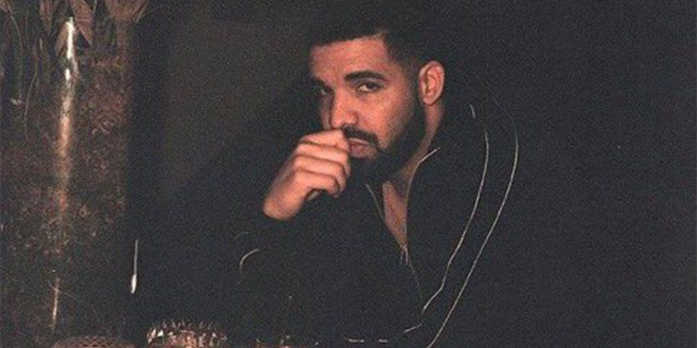
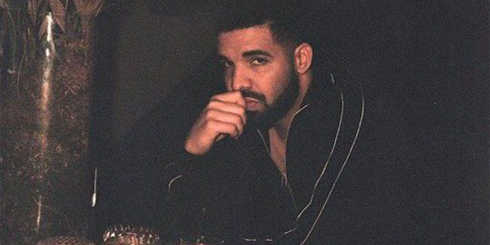
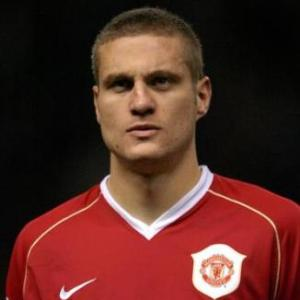
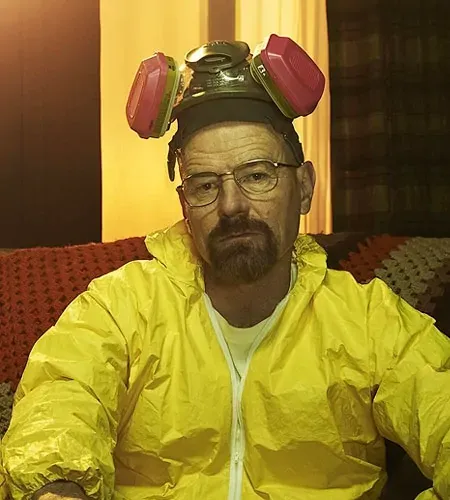
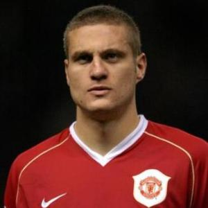
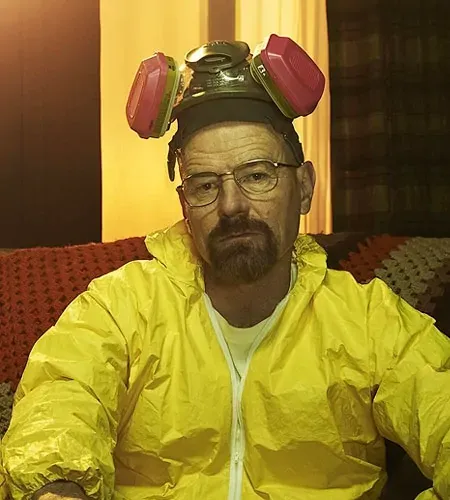

Asad Shamsiev üéÅ
 


 



Hello lads, welcome to my site. My name is Asad, and I am a 4th-year at the University of Virginia (as of 9/23/23). I am a Computer Engineering major, but I really enjoy building software. I've got 2 SWE internships under my belt (Parsons Corporation & Zillow), and I build stuff in my free-time.
I'm on a different mission.
I'm interested in algorithms, soccer, finance (somewhat), sociology, writing, hardware, and low-level programming. I also love working towards the mastery of my skills, and I am never content with stagnation. I love learning. I'm inspired by a few, but my mind really drives itself, like Tesla; I always had a little something extra.
Below are some of the projects I've worked on. I do these type of things in my free-time to A) hone my skills, B) impress my mates, and C) have fun. All of these were done in my free-time, barring the modified Shannon Switching Game, which was a final project for CS 4501. I included it anyway, because I still think it's pretty neat, and it shows how I approach complex, open-ended problems.